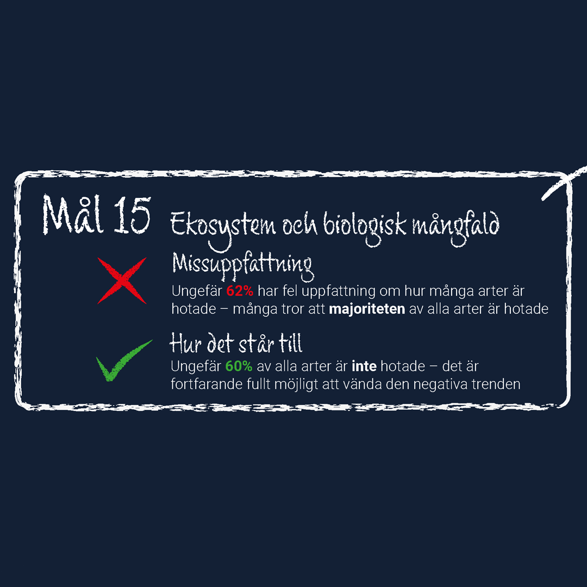
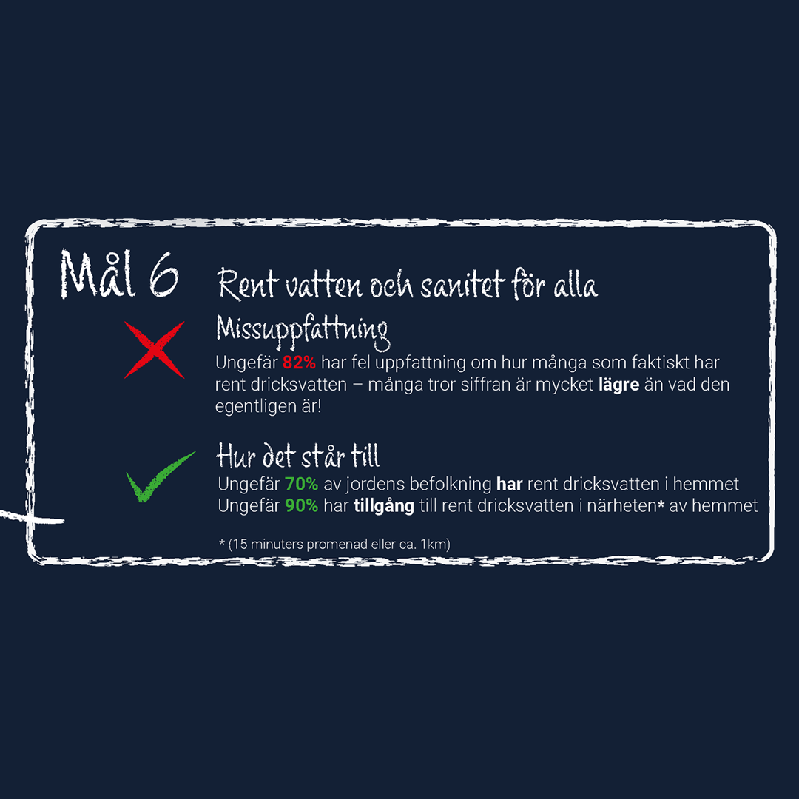
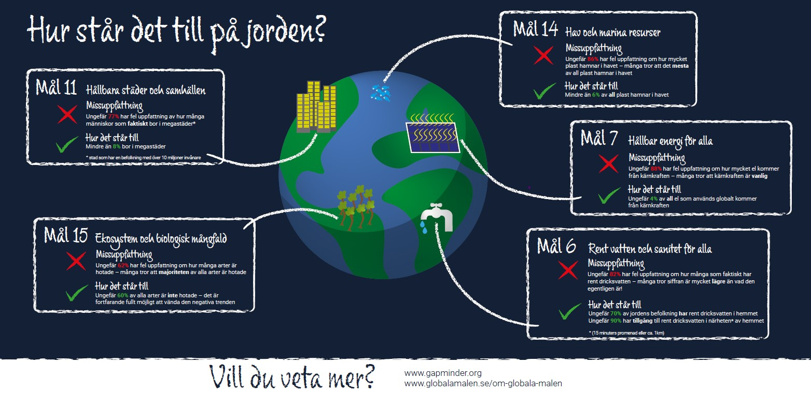

Infografik - Hur står det till på jorden?
Roll: allt
Programvara: illustrator
Slutprodukt: infografik som kan sättas upp på skolområden i Sverige
Översikt
Blir allt verkligen bara sämre? Sker det ingen positiv utveckling i världen? För ett projekt på Högskolan Dalarna skulle jag ta fram en infografik baserat på vanliga missuppfattningar om hur det faktiskt går med FNs globala mål. Målgruppen var gymnasieelever i Sverige och tanken var att grafiken skulle sättas upp och visas på skolområdet. All data som användes samlades in från gapminder.


